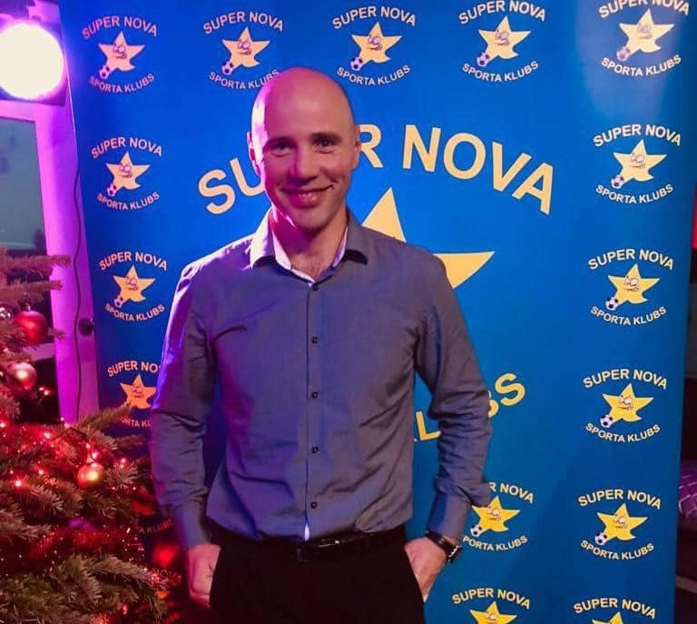

"Interesēja un patika visi sporta veidi, un redzēju tikai tādu darbu, kas varētu būt saistīts ar sportu."
Siguldas pilsētas vidusskolā strādā kopš 2011.gada
Intervētājs: Kristers Vikmanis
Cik gadus Jūs strādājat Siguldas pilsētas vidusskolā?
Siguldas pilsētas vidusskolā sanāk tieši 15 gadi — no vidusskolas atklāšanas dienas, bet kopā jau 26 gadi.
Tad Jums tiešām ir liela pieredze!
Diezgan liela gan!
Kādu priekšmetu Jūs pasniedzat, un vai ir iemesls, kāpēc tieši šis mācību priekšmets?
Kāpēc šis priekšmets? Tāpēc, ka agrāk, kad izvēlējos strādāt sporta jomā, nebija jau citu sfēru, kur iet, kā tikai kļūt par sporta skolotāju, jo man patika sports. Interesēja un patika visi sporta veidi, un redzēju tikai tādu darbu, kas varētu būt saistīts ar sportu. Pat tad, kad vēl bija ģimnāzija, izveidoju savu sporta klubu, un Siguldas Valsts ģimnāzijas direktors mani uzaicināja strādāt par sporta skolotāju.
Prieks dzirdēt, ka darāt to, kas Jums patīk!
Jā, darbs patīk, it sevišķi, kad izdodas un redzu, ka, strādājot ar jauniešiem, viņiem kaut kas jauns izdodas. Tad katrā stundā tu ieraugi, vai viņi kļūst ātrāki, veiklāki. Tad izdodas kaut kādas interesantas izspēles tajā pašā volejbolā, basketbolā, futbolā. Vārdu sakot — kad redz, ka ir kaut kāds sasniegums.
Vai pati skolotāja karjera vienmēr bija tā profesija, par kuru Jūs jau bērnībā sapņojāt?
Jā, jau no ceturtās klases zināju, ka būšu sporta skolotājs. Jau tad bija tās aptaujas, kur arī rakstīju, ka iešu strādāt skolā par sporta skolotāju. Mani tieši interesēja sporta virzība skolā. Skola varbūt nebūtu tā labākā vide. Droši vien varētu vairāk trenēt tieši savu specializāciju — pieņemsim, futbolu vai vieglatlētiku — tieši kā treneris. Bet tā nu tas ievirzījās, ka tas viss ir cieši saistīts.
Jau no ceturtās klases tas bija diezgan labi zināms?
Tieši tā, jo tad likās, ka nekādā citā jomā nevar strādāt tā, lai būtu saistība ar sportu.
Kas ir viens no Jūsu spilgtākajiem momentiem, ko esat piedzīvojis tieši šajā skolā? Varbūt kāda atmiņa, ko varat izcelt? Varbūt kāds sasniegums?
Jā, ļoti daudz tādu spilgtu momentu ir bijis. Pagājušajā gadā vien bija tāda situācija, kad Rīgā finālturnīrā futbolā divas komandas, kas mums bija aizbraukušas uz finālturnīru — 4. - 5. klašu un 6. - 7. klašu grupā — abas vienlaicīgi spēlēja divos laukumos un vienlaicīgi iekļuva finālā. Tie bija visas Latvijas skolu mači, un abas komandas bija finālā.
Varētu būt ļoti patīkami to piedzīvot!
To dzirdēt no otra laukuma, kad puiši jau gavilē, jo viņiem ir izdevies uzvarēt soda sitienos... Vēl jau ir tādas emocijas, ka abi mani dēli ir mācījušies Siguldas pilsētas vidusskolā. Un liels prieks bija, piemēram, pirmajā septembrī, kad visa skola stāv un klausās direktores uzrunu, un apsveic manu dēlu par iegūto pirmo vietu Latvijā matemātikas olimpiādē. Ļoti sirdij sildoši, jo tas nozīmē, ka pie mums strādā labi skolotāji, kas māk iemācīt savu priekšmetu, un arī ir daudz talantīgu bērnu.
Pirmā vieta Latvijā ir tiešām kaut kas ļoti augsts!
Bet vēl ir bijuši tādi momenti, kas aizkustina. Piemēram, bijām ekskursijā Igaunijā, un skolotāji gāja, skatījās apkārt to, kas viņiem visvairāk interesē. Un pēkšņi no vienas malas skrien viena meitene, apķeras un pateicas par to, ka esi viņai mācījis sportu.
Kas Jums skolā parasti liek pasmaidīt? Bet varbūt paskatīsimies nevis uz bijušajām situācijām, bet vairāk uz ikdienu?
Skolnieki liek smaidīt bieži, jo viņi pārsteidz. Viņi prot pārsteigt tā, ka tu pat nevari iedomāties, kā viņi var interesanti darboties vai rīkoties tādā vai citādā epizodē. Bieži ir dažādas situācijas spēles laikā vai izskan kāds negaidīts joks un tā tālāk. Vienkārši skolnieki pārsteidz. Bieži vien tu pat nevari iedomāties, uz kādiem brīnumiem viņi ir spējīgi.
Ja Jums būtu izvēle mainīt profesiju vai aiziet uz citu virzienu, vai Jūs tādu iespēju izmantotu vai tomēr atteiktu?
Tomēr šeit ir tā, ka man tik un tā būtu darbs kopā ar skolniekiem, jo es viņus trenēju arī pēc skolas, pieņemsim, tajā pašā futbolā. Tad, kad tu redzi skolā, kuram bērnam tas padodas, tu gribi viņu redzēt un attīstīt tālāk, lai viņam izdodas sasniegt augstākas virsotnes. Tas nozīmē, ka tas ir ļoti, ļoti cieši saistīts darbs — gan trenera darbs, gan skolotāja darbs.
SĀKUMS